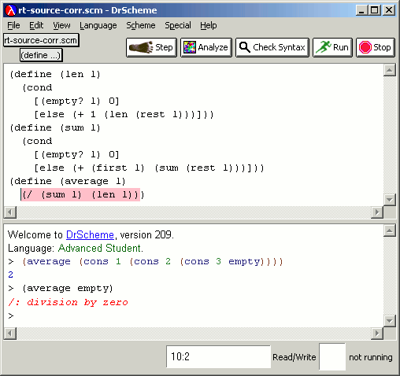
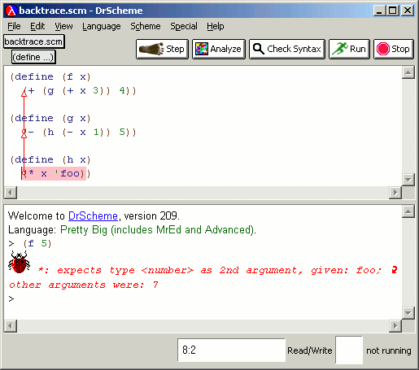
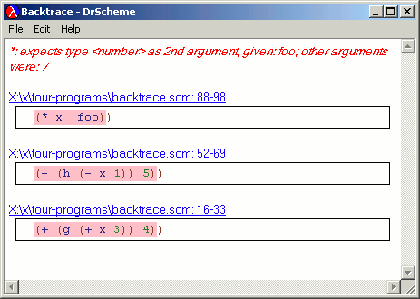

DrScheme highlights the location of not only syntactic but also dynamic errors, as this example illustrates.
|  |
In the Standard and PLT Scheme language levels, when a program commits a dynamic error, DrScheme prompts the user with the error message and a bug icon. It also overlays red arrows on the source to highlight the flow of control that led to the error.
|  |
Clicking on the bug icon invokes the Backtrace window, which shows the sequence of invocations resulting in the error. (These correspond to the invocations that the arrows identify.) The frames are accompanied by hyperlinks back to the source program.
|  |